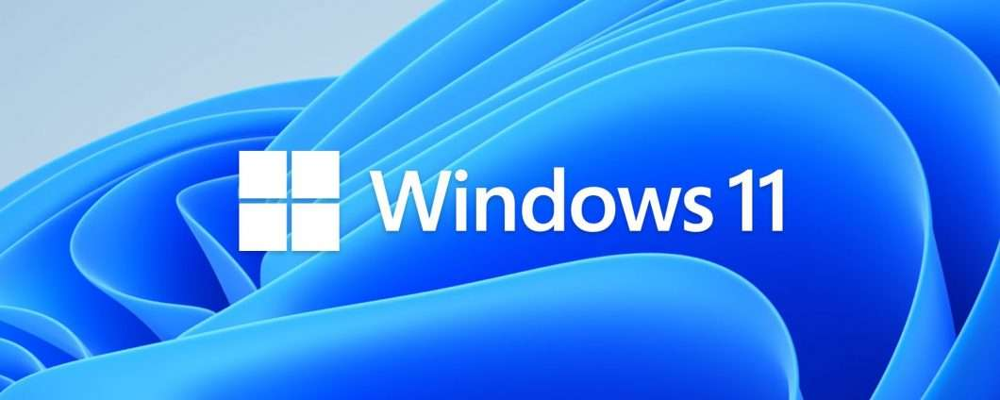

Microsoft Windows è una famiglia di ambienti operativi e sistemi operativi prodotta da Microsoft Corporation dal 1985, orientato a personal computer, workstation, server e smartphone; prende il nome dall'interfaccia di programmazione di un'applicazione a finestre, detta File Explorer.
Pagina Ufficiale 